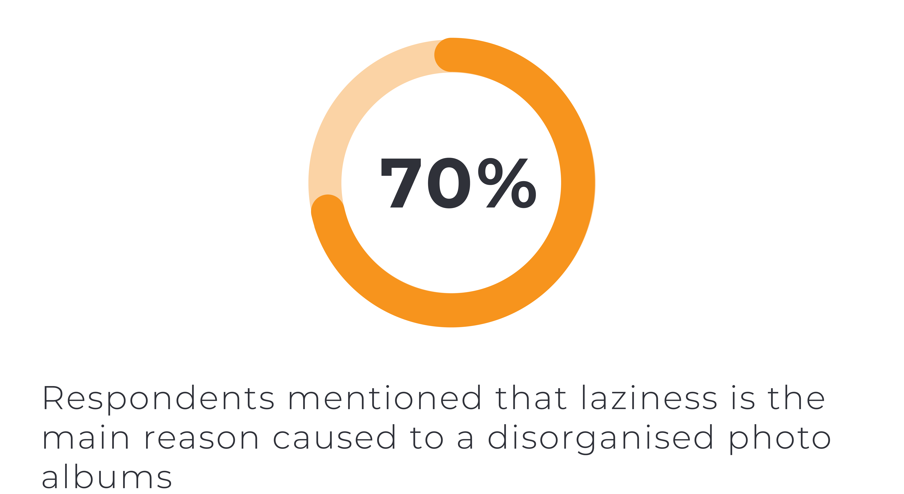

The Problem
The more photos you have taken, the more difficult to you can find a specific one in your albums.
This is because there are too many photos that interrupt you to find out the right one.
Sometime you would like to share work or pictures with your friends or clients during the
face-to-face conversation, but you might need a lot of time to find them out. This was the problem
my friends and I faced. It was really frustrating sometime. Therefore, the problem I would like to solve:
"How can I make image searching in my albums easier？"
Assumptions
My main assumptions were that:
- Most millennials were overwhelmed by searching in a pool of countless photos.
- Most millennials did not have time to organise their photos.
This was a self-directed personal project. Without client briefing or feedback,
it was necessary to adopt a lean methodology and to test these assumptions rigorously
through a series of primary research and supporting evidence. If I can access to a client,
I would validate each step with the client's feedback to ensure that I'm moving forward to the
solution which meets business goals and user needs.
User Research
First of all, I distributed user research questionnaires to 20 respondents who are millennials aged 22 - 28,
have
over 10K photos in their albums and come from Hong Kong or London. The result showed that
75% of respondents felt frustrated and overwhelmed while experiencing an obstacle that finding a particular
picture
in their photo albums is difficult because it is a mess and disorganised. That means the research
demonstrates the assumption 1 to a considerable degree.

However, most respondents disagreed that they did not have time to organise their photos. 70% of
respondents indicated that laziness is the main reason to cause a disorganised pool of photos.
They have time to organise the photos but just don't want to do it. It invalidates the assumption 2
to a high degree.
In conclusion, assumption 1 was verified significantly while assumption 2 was denied by the
result. There was a interesting finding that most millennials are lazy to organise the
photos even though they have time to do it. Therefore, it leads to 2 considerable viewpoints:
- There is no urgent need to develop a solution that mainly helps millennials organise their photos
because they rarely do it.
- Focusing on developing a solution that mainly helps them find a specific picture in their
album is better and more target-oriented.
User Interview

I conducted interviews with 3 respondents who is randomly selected in the 20 respondents in
order to further understanding thier needs. These interviews identified 4 key topics around
searching a specific photo in their chaotic albums:
- Reason why millennials feel frustrated: make them keep
scrolling & cannot find a specific photo in few
seconds.
- Reason to search a specific photo: share it with
friends or clients during face-to-face conversation or
via social media platforms.
- Selecting V.S Organising: all of the respondents choose select-assistive tools rather than
organise-assistive tool to help them solve this problem. This is because they think they are "too lazy"
to
do photo organisation.
-
3 main features the participants wanted: allowing people to
find the particular photo in their albums quickly, sharing it with their friends or clietns and
automatically
classifying photos into different categories or albums.

The cause diagram and affinity map allows me to evaluate and analyse the entire issue from a holistic
perspective. They help me identify an intriguing viewpoint that millennials rarely orgainse
their photos manually even though there is a tool to help them, and help me start flesting out the
potential solution by discovering 3 possible stages of this issue: auto classification,
quick photo searching & direct sharing.
Persona
After conducting a series of primary user research, I created a persona that combined with
my research data.

Customer Journey Map

The customer journey was a really useful tool to outline the potential customers' behaviours
and thought. It allowed me to understand the potential users deeply and to create the targeted
solutions for them based on the problems presented on the map. These helped me come up with
the features that addressed the main issues associated with searching a particular photo in a
disorgainsed photo album.
Due to limited time and resources, I chose auto classification, searching photos by keywords
and direct sharing as 3 main features in this project and to be developed.
User Flow

Click the user flow to view it clearly.
After identifying the main features, I created a user flow to show the path that users will
experience when they are using the application. It made sense to create a mobile application
which is called "Image Seeker" as the solution because it needed to link to apple ID and
smartphone photo albums.
The paths for auto classification, searching photos by keywords
and direct sharing were identified by different colors: yellow for searching photos, light
blue for direct sharing and violet for auto classification which was only located in the Home page.
The user flow was designed as easy as it can be because searching photos quickly was the ultimate
goal and it should not be interrupted by unnecessary procedures.
MVP / Low Fidelity Prototype

Features such as login/ sign up felt irrelevant
to the core features, so these were not included in my prototype.
The core features which were auto classification, photo searching by keywords and
direct sharing were presented to the testers and they were asked to complete a
few tasks in the usability test.
User Testing
I conducted 2 rounds of usability testing with 2 participants and kept the test benchmarks
at 30 seconds. That means if the participant spend more than 30 seconds on a task, it would lead to fail and
the design would need to be ameliorated. User testing revealed the following problems and improvements.
Round 1
- On the home page, users found the wording "16 GB available" was too small to read. They
suggested the words need to be larger and readable.
- Users indicated that some animations between transactions makes the application be clearer
and avoid confusion.
Round 2
- Users wanted a strong colour contrast should be applied in buttons to make them
be more obvious.
-
Users suggested some changes of wording in descriptions to make them be more precise and
understandable.
With these improvements, users evaluated the user experience of auto classification, photo searching and direct
sharing was better and the rating increased from 3.5 / 5 to 4.5 / 5 between these 2 rounds of testing.
High Fidelity Prototype / Final Product

Given that image seeker was a image-seeking and image-organised application, it made sense to
apply minimal style into its viusal design and it was no need to make it fancy because
over-decorating was not helping user achieve their goals but distracting. Hence, the final design
just stayed with 3 colours and neumorphism.
I conducted the last round of testing for visual design. Superisingly, on the scale of 5, the
result showed that users rated it as 4.5, which was impressive but developable.
Click
here to view the final product.
Outcome
It was a fruitful learning about how to apply lean methodology into a self-directed personal
project. My assumptions are tested thoroughly with user research questionnaires and user interviews,
and the result helped me create a solid solution that fulfiled user needs in searching a specific photo in
disorganised photo albums.
As a result, my solution is to develop an application with AI object
recognition that can link to your photo albums, automatically classify and organise the photos based on
dates or objects, allow users to search a specific photo by keywords and share the photos with friends or
clients directly.
Limitation & Future Development
Due to limited interviewees, time and networks, it cannot completely generalise all millennials'
opinion. However, my assumptions are rigorously verified based on the current conditions and data.
If I can access to more resources, I would collect more samples and data to test my assumptions in order
to achieve a more robust result.
Next step of this project can be going deeper in the research and adding more features to attract more users.
In terms of going deeper in the research, competitor analysis can be conducted to discover strengths and
drawbacks of existing applications in the market and the result can be utilised to develop a better
solution to the issue. Also, A/B testing can be employed into the usability testing in order to find
out the most appropriate user experience presentation to the target audience.
In terms of adding more feature, photo or video editing can be added into the application, thereby offering a more comprehensive user experience to the users.
classifying and saving photos based on locations can be added to allow users to create their own
travel diary. Also, allowing users to edit the name of ablums is a good choice. Besides, photo
filtering and photo organisation reminder can be added into this mobile application to create further
photo searching experience and so on.
Retrospective
The biggest challenge of this project for me is to conduct an unmoderated user testing. It was my first time
to execute an usability test by employing this method. An interviewee contacted me to confirm the tasks and it
showed
that the test instructions might be a bit unclear or some inappropriate words used.
What I have learned in this project is to ensure the wording in test instructions should be unambiguous and
selected. It helps testers understand the tasks more clearly and reduce the possibility of collecting
inaccurate
data.